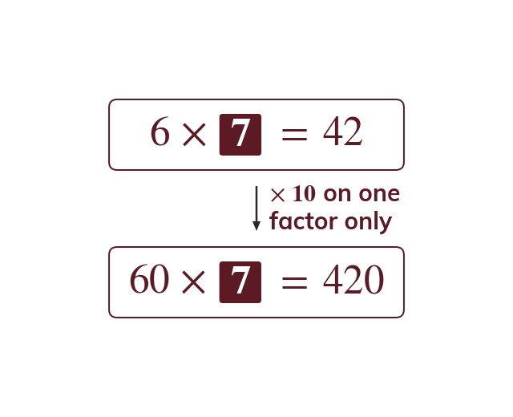
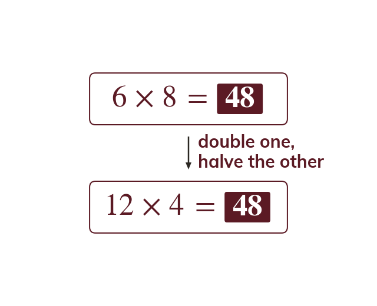
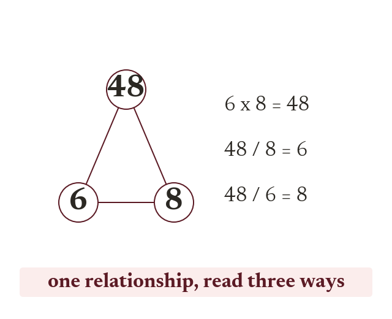
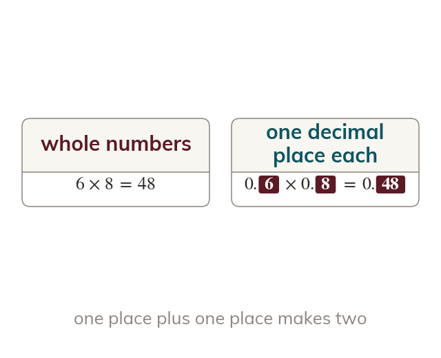
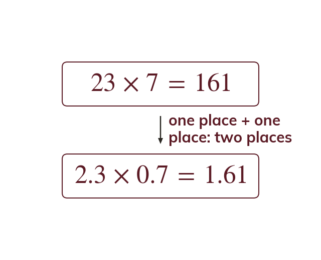

Topic 8.1 · Prime Factors and Calculation Skills · Lesson 3 of 5
Using Known Calculations
Once you know one multiplication fact, you already know a whole family of related facts hiding inside it - scaled up, scaled down, flipped into a division, or shifted into decimals. Today you'll learn to read those facts straight off a known calculation instead of working them out from scratch.
By the end you’ll know…
A known calculation generates a family of related facts without any recalculation.
Scaling one number by a power of ten scales the answer by that same power.
Scaling one number up and the other down by the same factor leaves the product unchanged.
Multiplication and division are inverses, so also gives and
A decimal calculation is the whole-number one rescaled, so follows from
By the end you can
G4Derive related multiplication and division facts from a given calculation.
G5Use a given calculation to answer problems involving decimals, without recalculating.
Work down the page at your own pace. Write every answer in your book first, then click to check it.
01
Do Now
About 5 minutes
1
Given that use this fact to find and
(scale by tenth) (scale by hundredth of the original fact)
2
Given that use this fact to find
(scale both the dividend and the answer by tenth).
3
Without a calculator, work out
4
Without a calculator, work out using a written method.
Remember these?
LAST LESSONIs a square number? How do you know?
Yes — every power is even; it is
LAST WEEKConvert litres into cm³
litre cm³, so cm³
LAST TERMRound to decimal places.
— the next digit rounds the up.
LAST YEARIf evaluate
02
Learn
Read each card, then follow the worked examples one step at a time.

Scaling one factor
Scaling one factor by scales the answer by The other factor stays the same. e.g. so
If you scale one number in a multiplication by a power of ten, the answer scales by that same power of ten - the other number hasn't changed, so only that one factor's contribution changes.

Scaling one up, one down
Multiply one factor and divide the other by the same number. The product stays the same. e.g.
If you scale one factor up by some number and the other factor down by the same number, the product stays exactly the same - what one factor gains in size, the other loses, and they cancel out.

Inverses
Multiplication and division are inverse operations. If then Also
Multiplication and division are inverse operations. If then and are automatically true too - they're the same relationship, just read in a different direction, and neither needs recalculating.
RELATED FACTS
Given find three related facts without recalculating.
Scale up by (only has been scaled up by so the answer scales by too)
Halve and double (one up, one down by the same factor, so the product is unchanged)
Divide by (inverses: dividing by either factor gives the other back)
Divide by
YOUR TURN · a
Given write down and one division fact.
because only the was scaled by ; and
YOUR TURN · b
Given find: then then two division facts. (Hint: which factor is being scaled by in the first one? For the second, what happens to and to keep the product unchanged?)
;; and
03
Check your understanding
Pick an answer. If it's wrong, the feedback tells you which mistake it was.
Given what is ?
Not quite. is times so the answer is times
Yes. is so
Not quite. Only one number got times bigger, so × not ×
Not quite. Multiply the answer by Don't add.
Given what is ?
Not quite. was also halved to so the doubling is undone.
Yes. doubled and halved, so the product stays
Not quite. was also doubled to which cancels out the halving.
Not quite. Double one and halve the other, and the product doesn't change.
Given which of these is also true?
Not quite. Both division facts come from the same multiplication.
Not quite. is true as well.
Yes. Multiplying and dividing undo each other, so both facts follow.
Not quite. Division undoes multiplication, so both facts follow straight away.
04
Practise
mark as you go
Checkpoint. Given find: ; a one-up-one-down variation of your choice that keeps the product ; and both division facts. Show your working - I'll check it before you move on.Show your teacher before you go on
1
Given find
is scaled by so the answer is too
2
Given find
is scaled by
3
Given find
is doubled and is halved The product stays
4
Given write down both division facts.
5
Given find
is so the answer is
EXT
Given find
so the answer is
05
Learn
Read each card, then follow the worked examples one step at a time.

Rescaling to decimals
A decimal calculation is the whole-number calculation rescaled. The answer has as many decimal places as the question has in total.
A decimal calculation is just the whole-number calculation rescaled - the total number of decimal places across the question matches the total number of decimal places shifted into the answer.

Using the known fact directly
Use the known whole-number fact as the working. Only the decimal point needs tracking.
Once you have a known whole-number calculation, using it to answer a decimal version IS the working - there's no need to recalculate from scratch, only to track how the decimal point moves.
MULTIPLYING DECIMALS
Given find without recalculating.
Count the places( has and has )
Shift places
Drop the zero
THE INVERSE
Now find the same way.
this is the inverse of so
YOUR TURN · c
Given find without recalculating.
two decimal places altogether, so the answer shifts two places:
YOUR TURN · d
Given find without recalculating, then use it to state (Hint: how many decimal places are in and together?)
;
06
Check your understanding
Pick an answer. If it's wrong, the feedback tells you which mistake it was.
Given what is ?
Yes. is so
Not quite. is times smaller than so the answer is too.
Not quite. Only one number got times smaller, so ÷ not ÷
Not quite. Divide the answer by Don't subtract.
Given a student is asked to find What is the most efficient way to answer?
Not quite. No need to start again. Adjust using the decimals.
Yes. Each number is times smaller, so
Not quite. The known fact gives the exact answer, so there's no need to estimate.
Not quite. The fact gives it:
Given what is ?
Not quite. is times smaller than so the answer is too.
Yes. is so
Not quite. Only one number got times smaller: ÷ not ÷
Not quite. is smaller than so the answer gets smaller, not bigger.
07
Practise
mark as you go
Checkpoint. Given find and without recalculating. Show your reasoning for how many decimal places shift each time - I'll check it before you move on.Show your teacher before you go on
1
Given find
decimal places
2
Given find
decimal places
3
Given find
decimal places
4
Given find
5
Given find
EXT
Given find
(double and halve) So
08
Exit ticket
On paper, on your own, then check
1
Explain why knowing also tells you that without doing the division.
Multiplication and division are inverse operations, so if then dividing by either factor must return the other factor exactly.
2
Given find and without recalculating.
(one factor so the product ) halved to doubled to so the product is unchanged)
3
Given find without recalculating.
decimal places altogether shifted in from
Finished? Next lesson: 8.1.4 Calculator Skills.
Practise more
After the lesson, or whenever you want more
Dr Frost
Log in, then search for a code to practise that skill.
128aWork out a related multiplication using a given multiplication fact, where one number is scaled.
176aWork out a related multiplication using a given multiplication fact, where both numbers are scaled.
123aCalculate a decimal multiplication using a given multiplication fact and knowledge of place value.